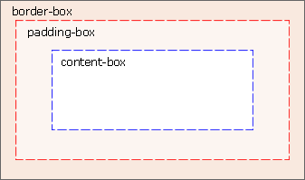

CSS3 背景
- CSS3 边框
- CSS3 文本效果
CSS3 背景
CSS3 包含多个新的背景属性，它们提供了对背景更强大的控制。
在本章，您将学到以下背景属性：
- background-size
- background-origin
您也将学到如何使用多重背景图片。
浏览器支持
| 属性 | 浏览器支持 | ||||
|---|---|---|---|---|---|
| background-size | |||||
| background-origin | |||||
Internet Explorer 9+、Firefox、Chrome、Safari 以及 Opera 支持新的背景属性。
CSS3 background-size 属性
background-size 属性规定背景图片的尺寸。
在 CSS3 之前，背景图片的尺寸是由图片的实际尺寸决定的。在 CSS3 中，可以规定背景图片的尺寸，这就允许我们在不同的环境中重复使用背景图片。
您能够以像素或百分比规定尺寸。如果以百分比规定尺寸，那么尺寸相对于父元素的宽度和高度。
例子 1
调整背景图片的大小：
div
{
background:url(bg_flower.gif);
-moz-background-size:63px 100px; /* 老版本的 Firefox */
background-size:63px 100px;
background-repeat:no-repeat;
}
亲自试一试
例子 2
对背景图片进行拉伸，使其完成填充内容区域：
div
{
background:url(bg_flower.gif);
-moz-background-size:40% 100%; /* 老版本的 Firefox */
background-size:40% 100%;
background-repeat:no-repeat;
}
亲自试一试
CSS3 background-origin 属性
background-origin 属性规定背景图片的定位区域。
背景图片可以放置于 content-box、padding-box 或 border-box 区域。
实例
在 content-box 中定位背景图片：
div
{
background:url(bg_flower.gif);
background-repeat:no-repeat;
background-size:100% 100%;
-webkit-background-origin:content-box; /* Safari */
background-origin:content-box;
}
亲自试一试
CSS3 多重背景图片
CSS3 允许您为元素使用多个背景图像。
实例
为 body 元素设置两幅背景图片：
body
{
background-image:url(bg_flower.gif),url(bg_flower_2.gif);
}
亲自试一试
新的背景属性
| 属性 | 描述 | CSS |
|---|---|---|
| background-clip | 规定背景的绘制区域。 | 3 |
| background-origin | 规定背景图片的定位区域。 | 3 |
| background-size | 规定背景图片的尺寸。 | 3 |
- CSS3 边框
- CSS3 文本效果